Деплой
Heroku
Heroku
- облачный сервис: легкость управления и масштабирования
- перепродают ресурсы AWS
- Node, Ruby, Java, PHP, Python, Go, Scala, Clojure
- автодеплой с github
- документация для node.js
- цены
Heroku - Free Tier
- Dyno - 512 MB RAM │ 1 web/1 worker
- засыпает после 30 минут неактивности
- 550 (1000) бесплатных часов
- Postgres - 10K строк, 5 баз
- Redis - 25 MB RAM, 20 подключений
- Mongo - 496 MB

Heroku - Getting Started
Гайд
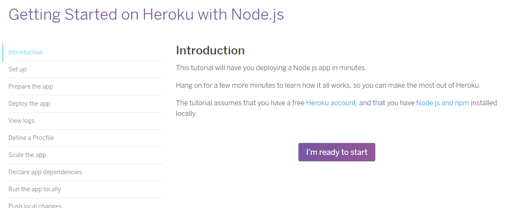
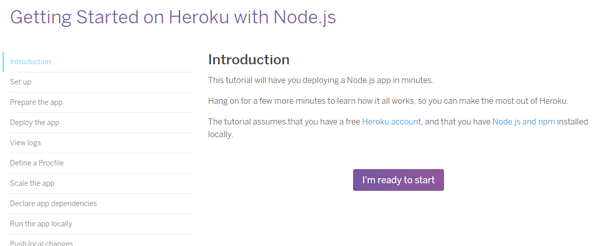
Heroku - Getting Started
Создаём аккаунт

Heroku - Getting Started
Устанавливаем Heroku CLI
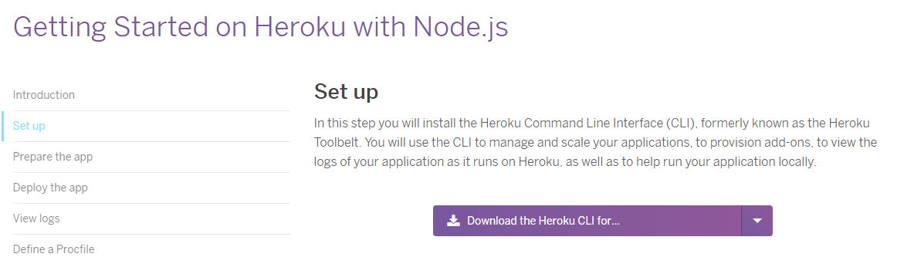
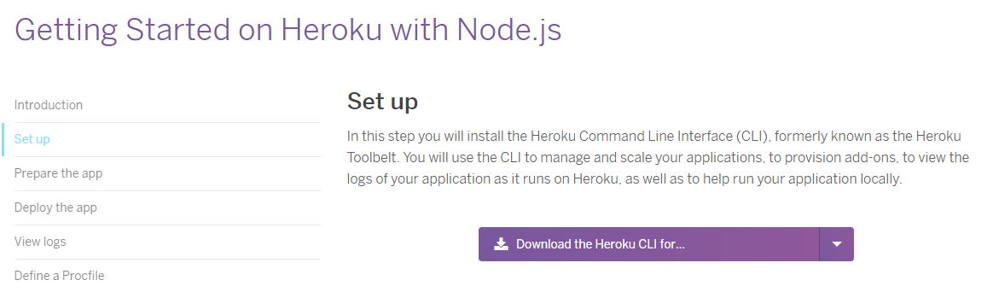
Heroku - Getting Started
Логинимся

> heroku login
Heroku - Getting Started
> node --version
> npm --version
> git --version
Heroku - Getting Started
Клонируем проект
> git clone https://github.com/heroku/node-js-getting-started.git
> cd node-js-getting-started
Heroku - Getting Started
Создаем новое приложение
> heroku create
Heroku - Getting Started
Создаем новое приложение

Heroku - Getting Started
Создаем новое приложение

Heroku - Getting Started
Создаем новое приложение

Heroku - Getting Started
Деплоим
> git push heroku master
Heroku - Getting Started
Деплоим

Heroku - Getting Started
Деплоим
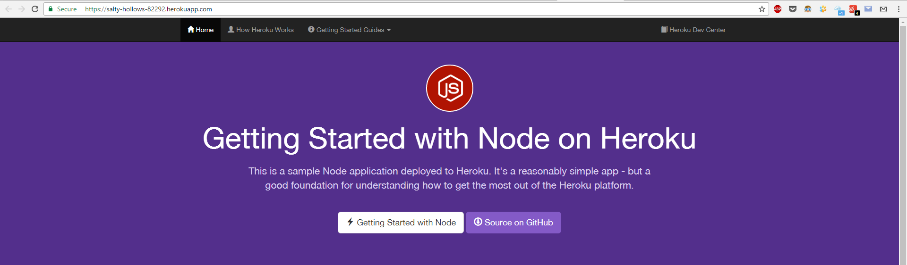
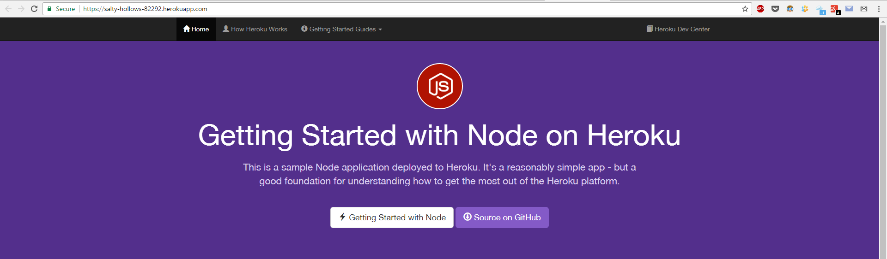
Heroku - Hello world
> mkdir hello-world
> cd hello-world

Heroku - Hello world
package.json
{
"name": "hello-world",
"version": "1.0.0",
"scripts": {
"start": "node index.js"
}
}
Heroku - Hello world
> npm i --save express
Heroku - Hello world
index.js
'use strict';
const express = require('express');
const app = express();
const port = process.env.PORT || 3000;
app.get('/', (req, res) => {
res.send('Hello World!');
});
app.listen(port, function () {
console.log(`Server running on ${port}`);
});
Heroku - Hello world
.gitignore
.idea/
node_modules/
Heroku - Hello world
> git init
> git add *
> git commit -m 'init project'
> heroku create
> git push heroku master
> heroku open
Heroku - Hello world
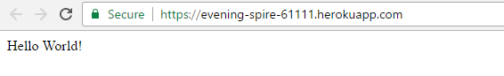
Heroku - Hello world
'use strict';
const express = require('express');
const app = express();
const port = process.env.PORT || 3000;
app.get('/', (req, res) => {
res.send('Hello New World!');
});
app.listen(port, function () {
console.log(`Server running on ${port}`);
});
Heroku - Hello world
> git add *
> git commit -m 'changes'
> git push heroku master
> heroku open
Heroku - Hello world

Heroku - Database
> cd hello-world
> heroku addons:create heroku-postgresql:hobby-dev
Heroku - Database

Heroku - Database
> npm i --save sequelize pg pg-hstore
Heroku - Database
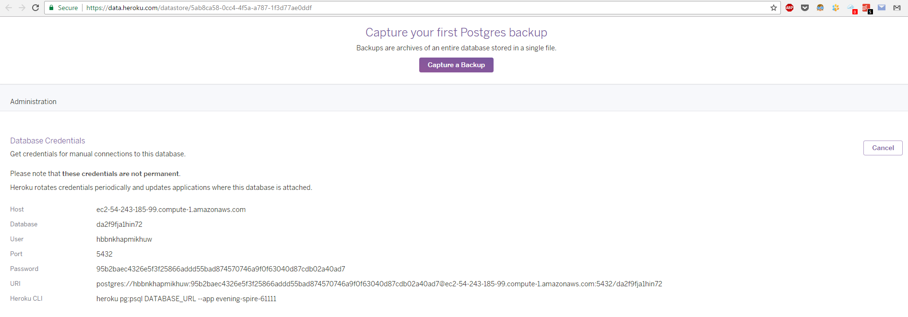
Heroku - Database
config.json
{
"db": {
"host": "ec2-54-243-185-99.compute-1.amazonaws.com",
"name": "da2f9fja1hin72",
"user": "hbbnkhapmikhuw",
"password": "95b2baec4326e5f3f25866addd55bad874570746a9f0f63040d87cdb02a40ad7",
"dialect": "postgres"
}
}
Heroku - Database
index.js
'use strict';
const express = require('express');
const Sequelize = require('sequelize');
const port = process.env.PORT || 3000;
const config = require('./config');
const dbcontext = require('./context/db')
(Sequelize, config);
const app = express();
...
Heroku - Database
index.js
...
app.get('/', (req, res) =>{...});
app.get('/generate', (req, res) => {...});
dbcontext.sequelize
.sync()
.then(() => {
app.listen(port, () => {
console.log(`Running on ${port} port`);
});
});
Heroku - Database
index.js
app.get('/', (req, res) =>{
dbcontext.rand
.findAll({ raw: true })
.then((rands) => res.json(rands));
});
app.get('/generate', (req, res) => {
dbcontext.rand
.create({
value: Math.random()
})
.then((rand) => res.json(rand));
});
Heroku - Database
context/db.js
'use strict';
module.exports = (Sequelize, config) => {
const options = { host: config.db.host,
dialect: config.db.dialect,
dialectOptions: { ssl: true } };
const sequelize = new Sequelize(config.db.name,
config.db.user, config.db.password, options);
const Rand = require('../models/rand')
(Sequelize, sequelize);
return { rand: Rand, sequelize: sequelize };
};
Heroku - Database
models/rand.js
'use strict';
module.exports = (Sequelize, sequelize) => {
return sequelize.define('rands', {
id: {
type: Sequelize.INTEGER,
primaryKey: true,
autoIncrement: true
},
value: Sequelize.INTEGER
});
};
Heroku - Database
> git add *
> git commit -m 'add database'
> git push heroku master
> heroku open
Heroku - Database

Heroku - Hints
'use strict';
Heroku - Hints
global.isProduction
= process.env.NODE_ENV === 'production';
Heroku - Hints
{
"name": "hello-world",
"version": "1.0.0",
"dependencies": {
"express": "^4.14.0"
},
"scripts": {
"start": "node index.js"
},
"engines": {
"node": "6.9.4"
}
}
Heroku - Hints
{
"name": "hello-world",
"version": "1.0.0",
"dependencies": {
"express": "^4.14.0"
},
"scripts": {
"start": "node index.js",
"heroku-prebuild": "echo This runs before Heroku installs your dependencies.",
"heroku-postbuild": "echo This runs afterwards."
}
}
Heroku - Hints

CI / CD
Непрерывная интеграция / Непрерывная доставка
CI/CD
- практика программирования
- частое слияние feature-веток с master
- автоматизированные сборки
- автоматизированное выполнение тестов
- автоматизированный деплой
- отправка отчетов
CI/CD - Запуск
- вручную
- по расписанию
- по изменениям в репозитории
CI/CD - Heroku+Github
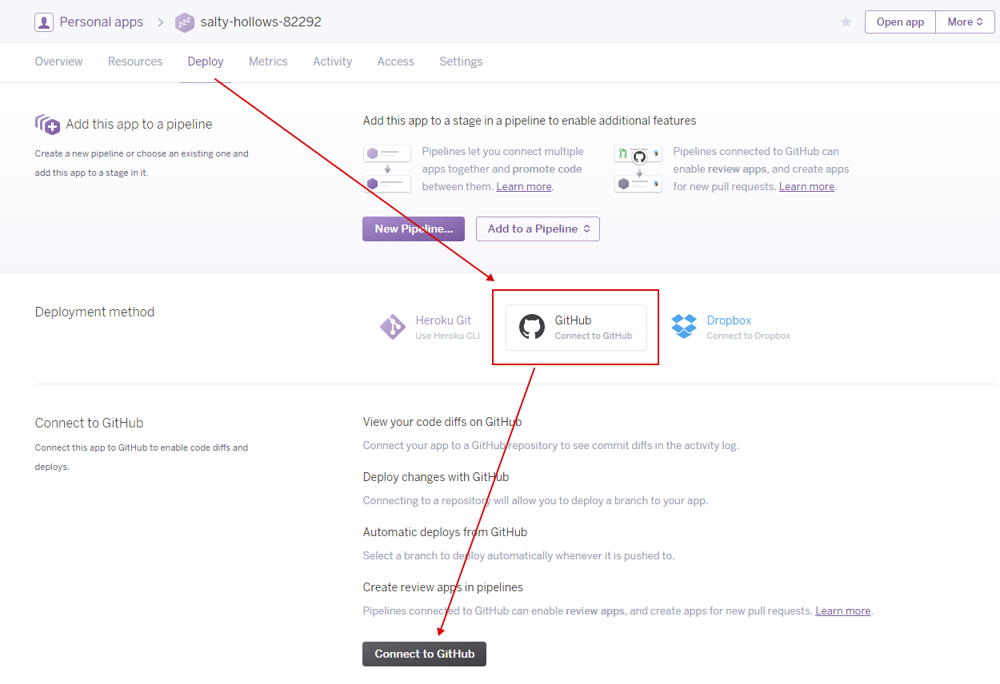
CI/CD - Heroku+Github
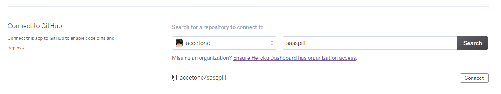
CI/CD - Heroku+Github

CI/CD - Heroku+Github
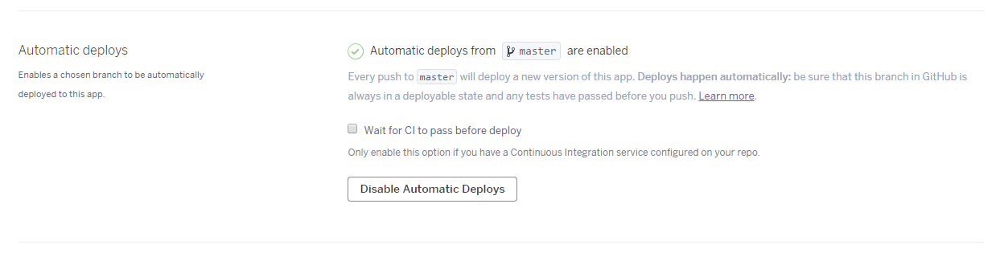
CI/CD - Heroku+Github

PM2
PM2
- менеджер процессов для node.js
- несколько потоков
- запуск при перезагрузке сервера
PM2 - Quick Start
index.js
const http = require('http');
const server = http.createServer((req, res) => {
res.end('Hello World\n');
});
server.listen(3000, '127.0.0.1', () => {
console.log('Running');
});
setTimeout(() => {
throw new Error('Surprise');
}, 5000);
PM2

PM2
> npm install pm2@latest -g
> pm2 start index.js
PM2
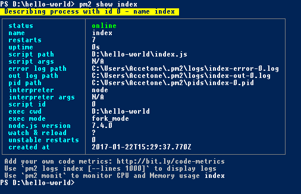
PM2
> pm2 stop index
> pm2 startup
> pm2 start index.js -i max
> pm2 reload index
> pm2 logs
> pm2 flush
Для виртуальных машин
- получаем ключи для подключения по SSH
- устанавливаем node.js, nginx и другие пакеты
- заливаем проект (git, sftp, scp, ...)
- npm i --production
- запускаем через pm2
- настраиваем nginx для маршрутизации сетевого трафика на приложение